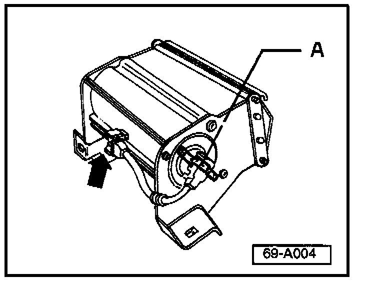

Airbag, Passenger Front - Disconnecting
Group: 69Number: 98-02
Date: Feb. 16, 1998
Subject:
Front Passenger Airbag Unit, Disconnecting
Model(s):
Golf, Jetta, Cabrio 1997-->
Service
When any repair requires disconnecting the front passenger airbag:

Only disconnect electrical connector at rear of airbag unit -arrow-. The harness leading from the side to the rear of the airbag unit must remain attached to the airbag unit.
CAUTION!
DO NOT remove connection at side of airbag unit -A-. Damage to connector retaining clips will result.
Note:
Also refer to Cautions and Warnings as well as removal and installation instructions listed in the appropriate Repair Manual.